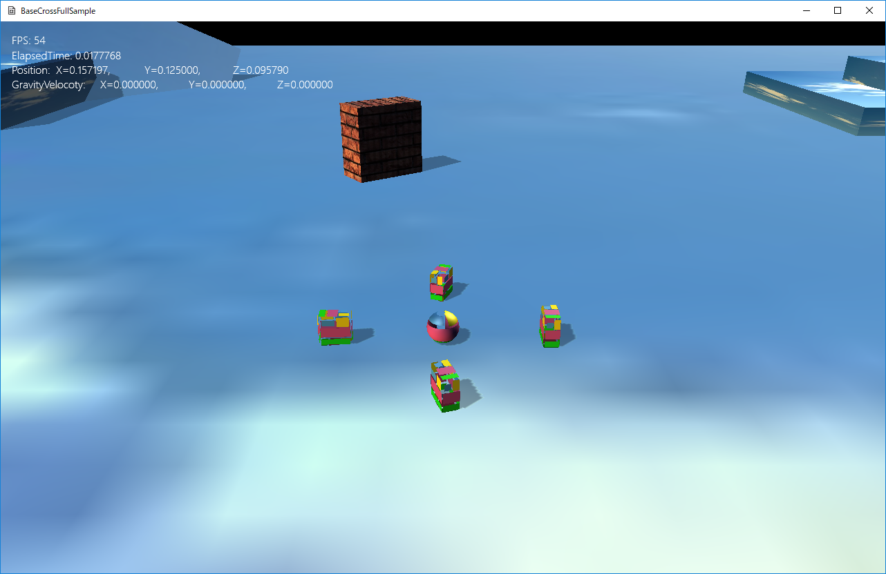

図1202a
中心の壁模様のボックスが、移動しながら回転するのがわかると思います。
void MoveBox::OnUpdate() {
float ElapsedTime = App::GetApp()->GetElapsedTime();
m_TotalTime += ElapsedTime;
if (m_TotalTime >= 4.0f) {
m_TotalTime = 0.0f;
m_Swap = 1 - m_Swap;
}
auto PtrTrans = GetComponent<Transform>();
auto StartPos = PtrTrans->GetPosition();
StartPos.x = m_Position.x;
auto EndPos = StartPos;
EndPos.x += 4.0f;
Vec3 StartRot(0, 0, 0);
Vec3 EndRot(0, XM_2PI * 2.0f, 0);
Vec3 TgtPos,TgtRot;
Easing<Vec3> easing;
if (m_Swap) {
TgtPos = easing.EaseInOut(EasingType::Exponential, EndPos, StartPos, m_TotalTime, 4.0f);
TgtRot = easing.EaseInOut(EasingType::Exponential, EndRot, StartRot, m_TotalTime, 4.0f);
}
else {
TgtPos = easing.EaseInOut(EasingType::Exponential, StartPos, EndPos, m_TotalTime, 4.0f);
TgtRot = easing.EaseInOut(EasingType::Exponential, StartRot, EndRot, m_TotalTime, 4.0f);
}
PtrTrans->SetRotation(TgtRot);
PtrTrans->SetPosition(TgtPos);
}
Easing<Vec3> easing;
Easing<float> easing;